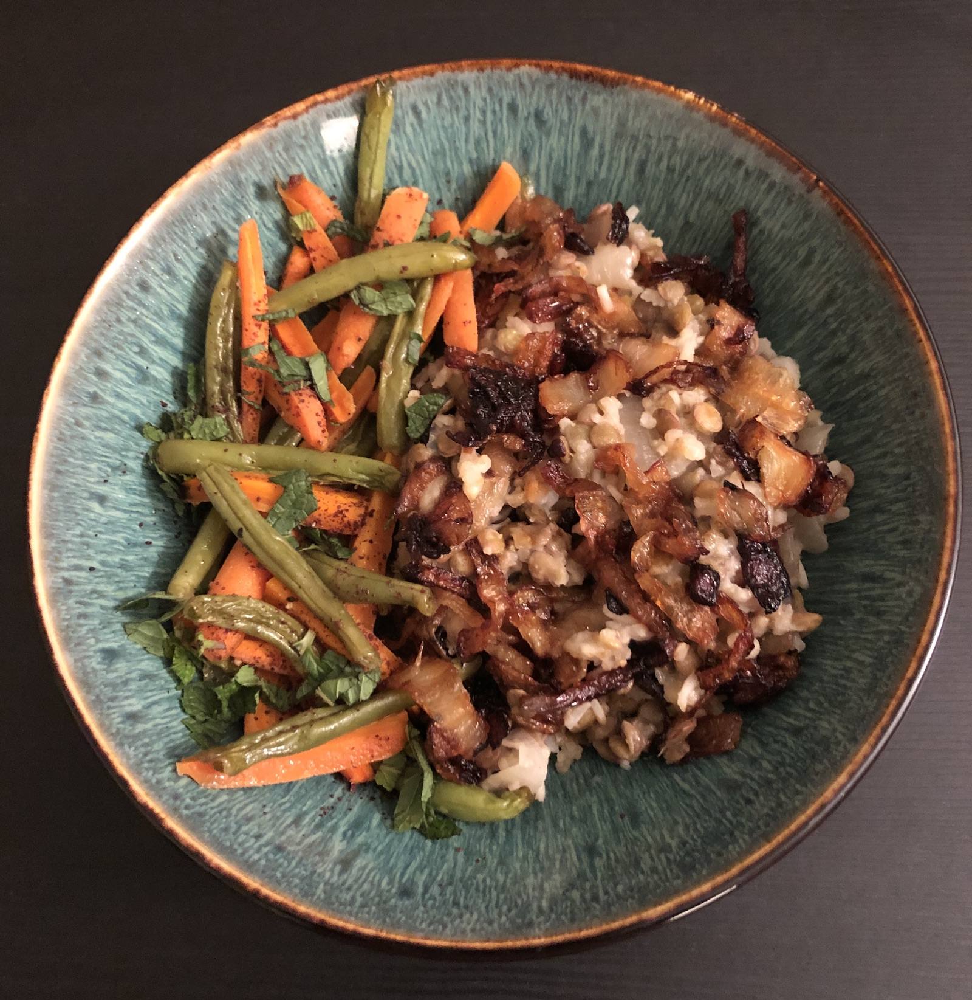

Welcome to Healthy Eats!
Hello everyone! My name is Samantha and I am a graduate student who loves to experiment with cooking. Nothing is more fun than making your own tasty meals during a study break. An essential part of making a healthy dish is fresh ingredients and tons of spices to bring out the richness in the favors.
My pantry has a variety of spices to choose from for enhancing a dish and I’m always eager to experiment with them to create delicious dishes. I’m always looking for shortcuts in making my favorite foods because as a graduate student I have limited time to spend in the kitchen. This blog will share my kitchen adventures experimenting with recipes and kitchen hacks for healthy cooking!